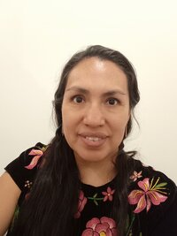

Karina Rodriguez | WDD 130
Hi! My name is Karina Rodríguez and I am from Mexico City. I love painting, art digital, and making craft hands. Fifteen years ago I got a bachelor's degree in Fine Arts in my country. The university where I studied for my degree was founded by Diego Rivera, Frida Kahlo, and David Alfaro Siqueiros.
I decided to enroll in Pathway because I only wanted to improve my English but when I started it, I loved the program then I chose to take TEFL and Graphic Design certificates.
I have been married for 24 years and I have three sons. the eldest son is 23 years old, the second is 15, and the little boy is 9 years. It was a wonderful experience to raise my family and the two years I saw my oldest son being sealed in the temple with his beautiful wife for all eternity.